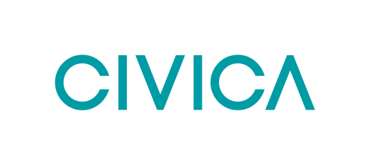
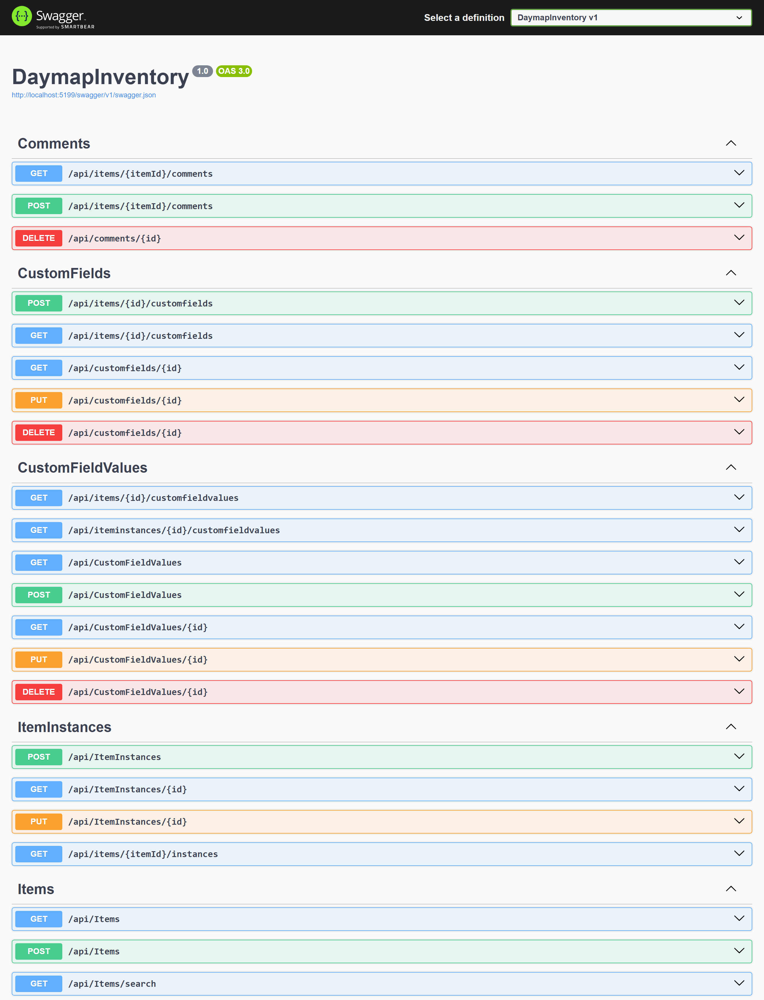

Stop asking "who has the projector?" Know where every school asset is, who has it, and when it's due back.
Schools track thousands of laptops, lab kits and instruments with spreadsheets, paper sign-out sheets and memory, so items go missing and stock expires unnoticed.
An inventory back end for Civica's Daymap platform: items and individual units, loans and returns, custom fields, tags, expiry tracking and search.
Less time chasing equipment, fewer lost and expired items, and one trusted record of everything a school owns.

Our working API, documented in Swagger